System Architecture & Benchmark Highlights
ArtVision unifies deep convolutional representation learning, Bayesian uncertainty loss balancing, perceptual color science, and post-hoc temperature scaling.
| Head / Task | Target Scope | Top-1 Accuracy | Top-3 Accuracy | Macro F1 | Calibrated ECE | Status & Note |
|---|---|---|---|---|---|---|
| Authenticity | Human-made vs AI-generated (Binary) | 97.06% | 100.0% | 0.935 | 0.0107 | AUROC 0.995 |
| Derived Movement | 7 Coarse Art Historical Eras | 72.01% | 100.0% | 0.720 | — | Canonical Mapping |
| Genre | 10 Classical Visual Categories | 66.35% | 94.04% | 0.565 | 0.0664 | Sparsity Masked |
| Artist Attribution | 23 Filtered Master Artists | 65.05% | 82.61% | 0.625 | 0.0439 | Top-N Filtered |
| Style Classification | Fine-grained Historical Styles | 59.93% | 84.22% | 0.434 | 0.0442 | 27 WikiArt Classes |
| Mood | 5 Emotion Categories | 21.43% | 78.57% | 0.115 | 0.1318 | Experimental Task |
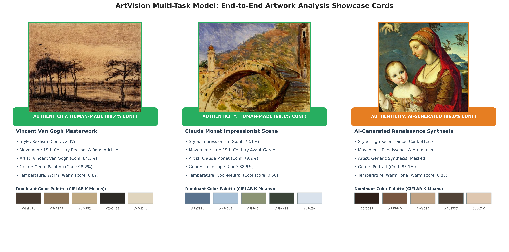
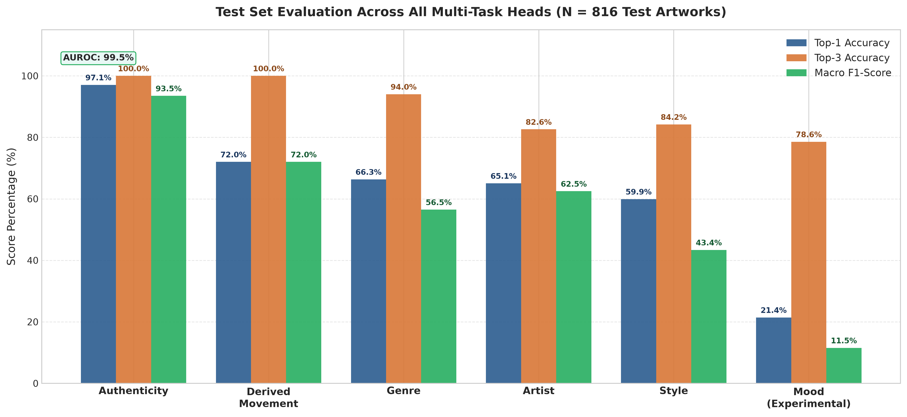
Exploratory Data Analysis & Dataset Visualizations
Insights into the unified dataset combining 7,099 human masterworks from WikiArt and 1,000 diffusion-generated artworks from ArtBench.
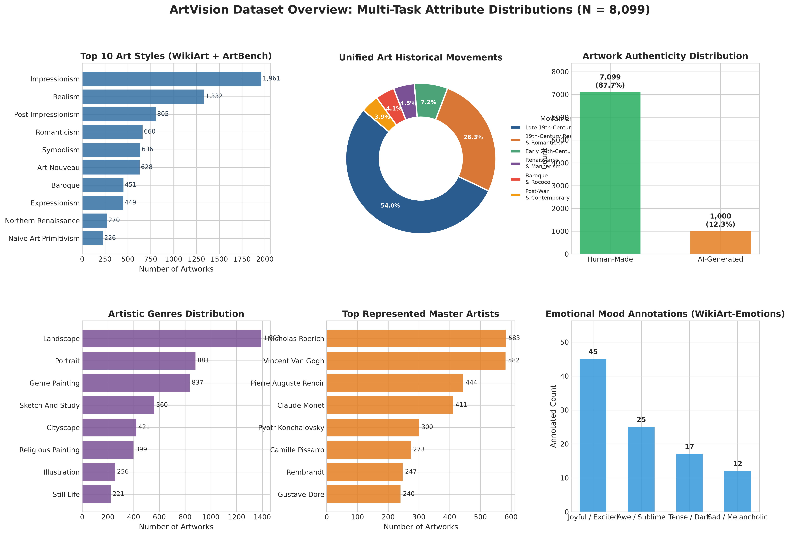
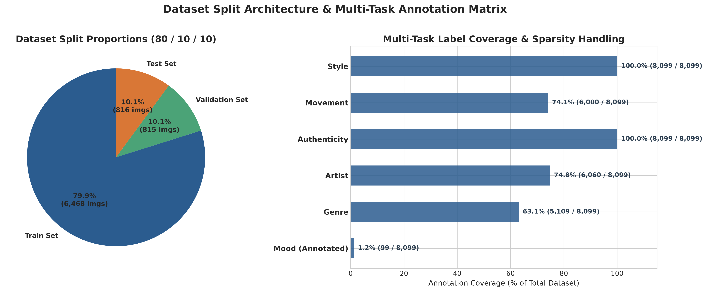
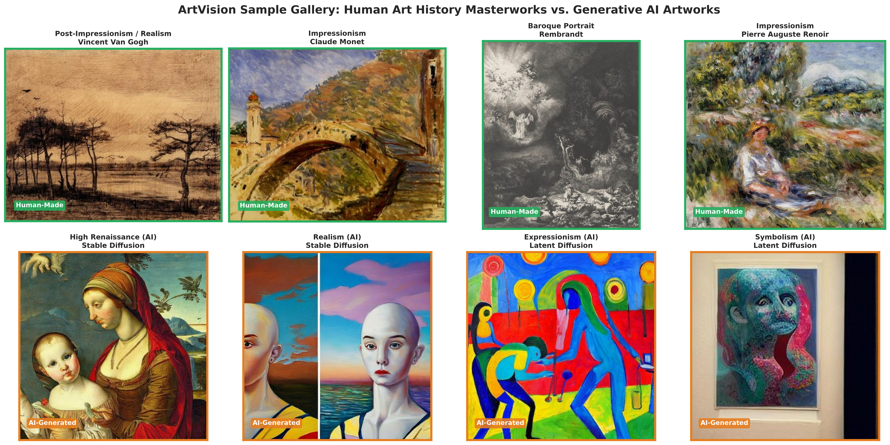
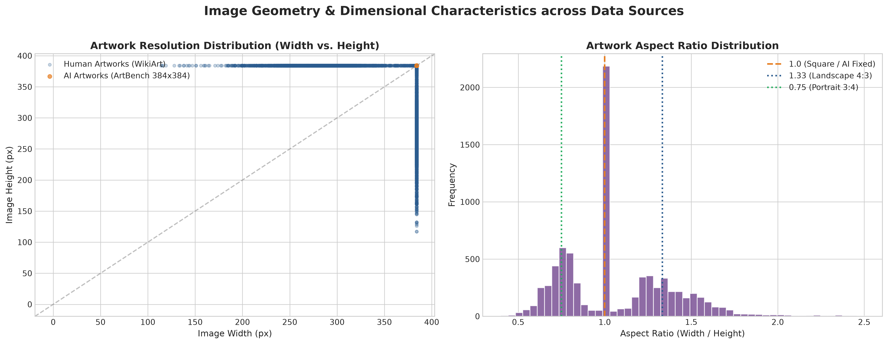
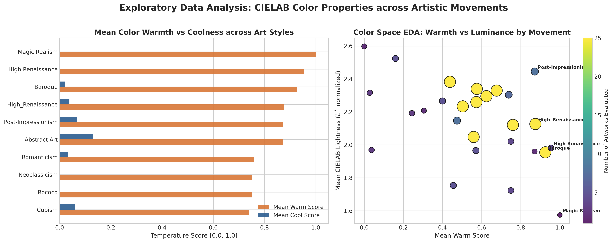
Model Training Dynamics, Ablations & Reliability
Empirical evidence of multi-task convergence, homoscedastic uncertainty loss balancing, post-hoc calibration, and qualitative error analysis.
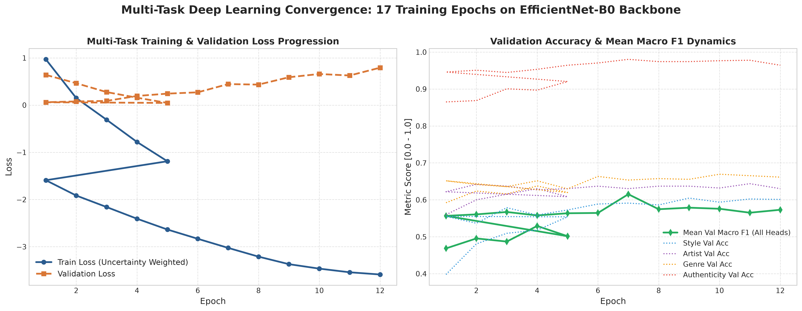
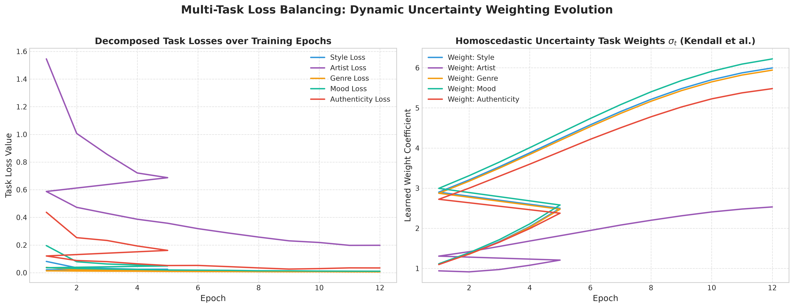
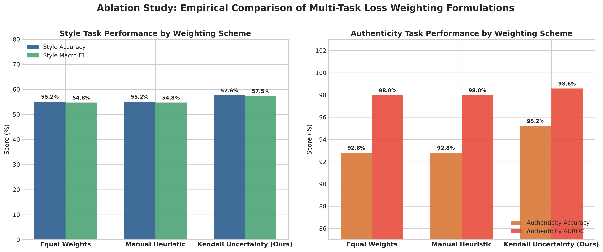
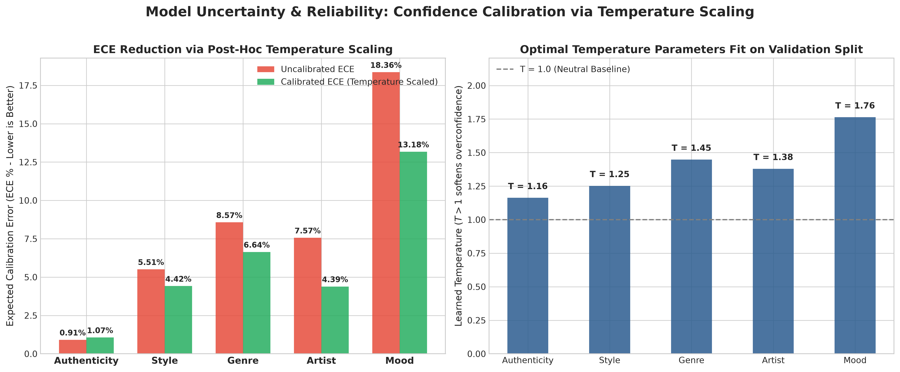
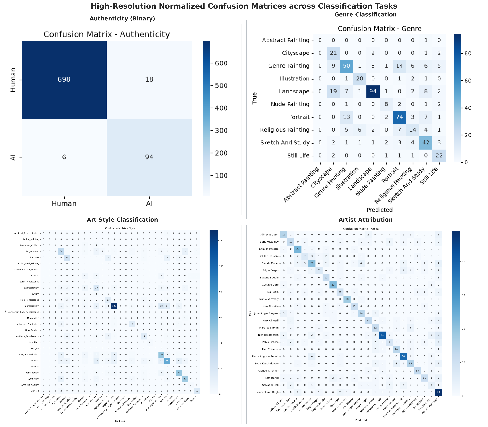
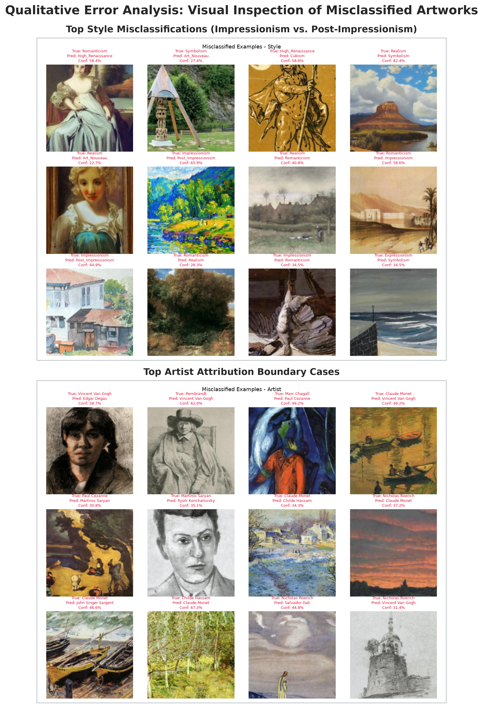
Results, Explainability & Search Demonstrations
Visual demonstration of ArtVision's operational capabilities: multi-task inference, Grad-CAM attribution, CIELAB color clustering, and vector similarity retrieval.
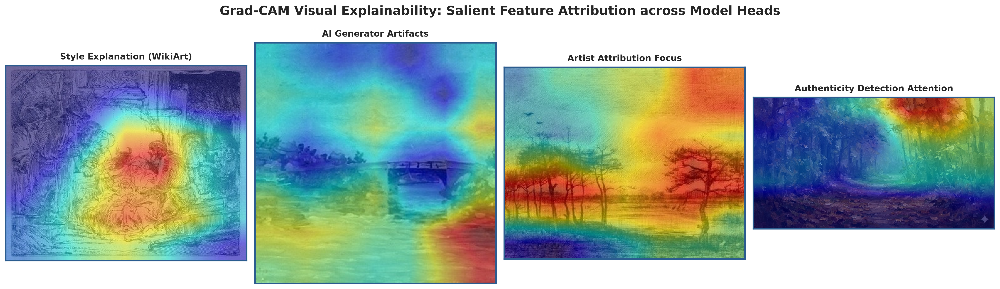
backbone.conv_head verifying that predictions focus on authentic brushstrokes rather than canvas framing borders.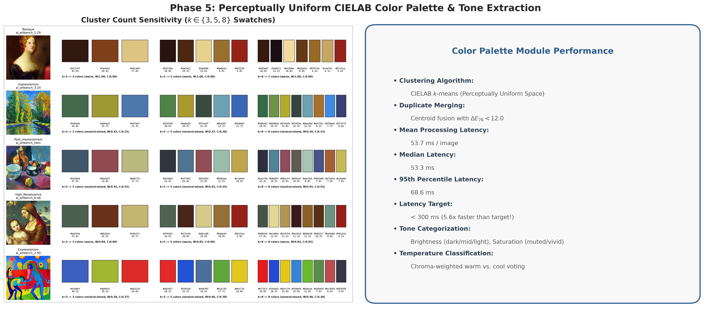
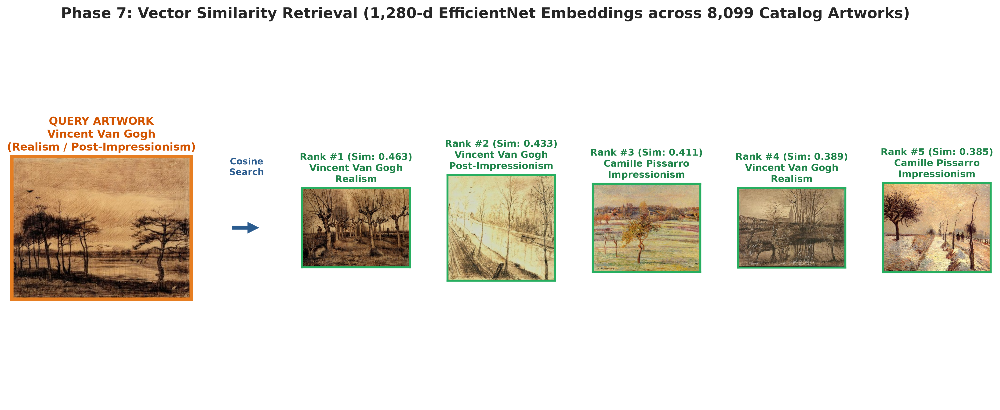
Project Presentation & Viva Defense Guide
Key talking points, architectural justifications, and answers to anticipated examiner questions.
Executive Summary for Examiners
ArtVision solves the problem of fragmented artwork analysis by introducing a single unified multi-task architecture capable of predicting style, historical movement, artist attribution, genre, mood, and AI authenticity, accompanied by perceptual color tone analysis, visual explainability, and similarity search.